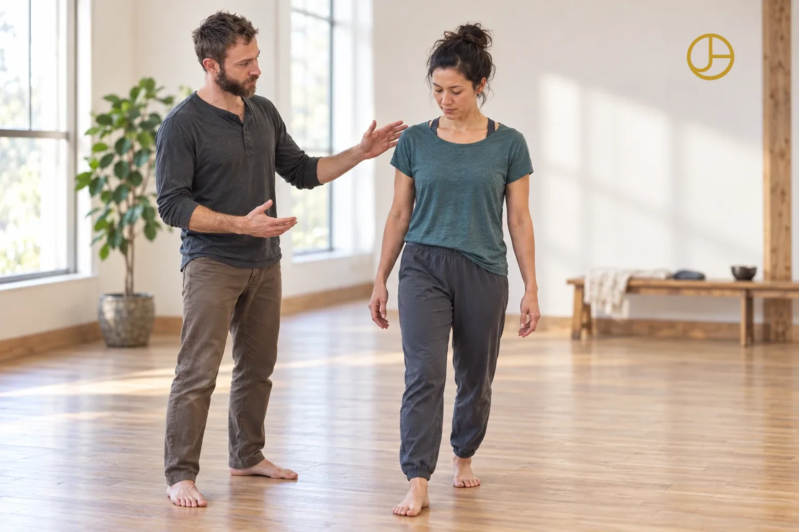

If you’ve built some stability
You’re ready to prioritize what that stability was intended to support. Maybe you’re in a transition, like an empty nest or retirement, and it’s time to put yourself and your relationships first.
I’m John Adams. I work with that structure in two ways: hands-on, through Structural Integration, and in relationship, through somatic and relational practice.
This fall I’m leading Habits of Being, a ten-week cohort.

Structural Integration is my main practice. It’s focused work to organize the joints toward their optimal geometry, in line with gravity, so the body has a resilient alignment and support.
In contrast to those who have given this work a reputation for being painful, I work with the body’s natural inclination toward what feels good. That way, we work with the whole self as a responsive, intelligent system, rather than “on” the body as an inert mechanical object.
It’s a kinesthetic re-education, for a more satisfying and joyful experience of embodiment.
Through years of practicing, this lineage has become woven in with an evolution of Tragerwork called Sensory Repatterning. It’s a gentle practice that uses rhythmic, wave-like motions and slow range-of-motion explorations to “talk” to the body with passive movement, inviting it to let go of its chronic tensions and holding patterns.
Since it reveals unconscious tensions and entices their release, you can think of it as deep relaxation training.
“Throughout, I did not feel worked ‘on,’ I felt worked ‘with.’”
Your posture, your breath and the way you move come with you into every relationship. So alongside bodywork, I work in relationship.
I’ve practiced contact improvisation for eighteen years, and I’m trained in Circling, a relational meditation and communication practice.
Group practice gives what’s shifting somewhere to live: in the presence of others.
“You can tell he is very gifted and dedicated to his work within two minutes on the table.”
You’re ready to prioritize what that stability was intended to support. Maybe you’re in a transition, like an empty nest or retirement, and it’s time to put yourself and your relationships first.
You likely have clients who have developed significant self-understanding, and who would benefit from extending it into present-moment practice, in the body and in relationship. It may be a good fit for you, too.
I trained in Structural Integration at IPSB, completing the program in 2011 under Ed Maupin, a longtime friend of Ida Rolf. My Master’s thesis at McGill University was on embodiment, relationship and whole-systems well-being.
Under all of it is one approach: attuning, without forcing or controlling.